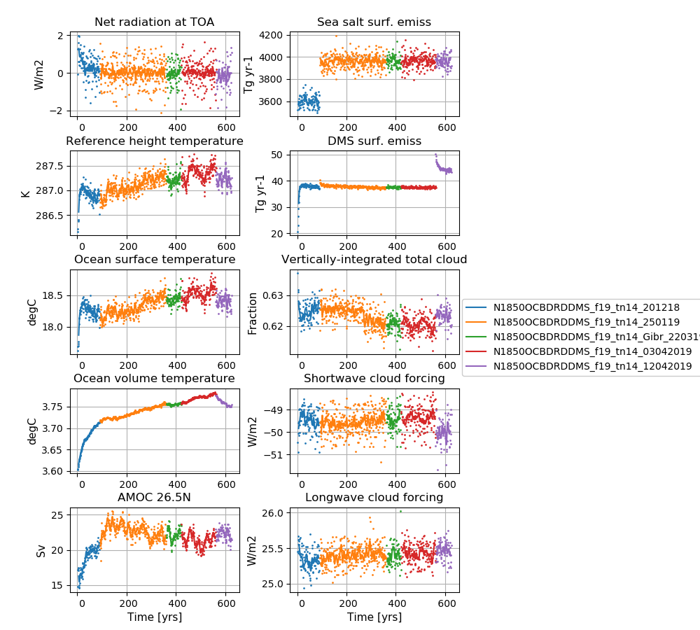

N1850OCBDRDDMS_f19_tn14_12042019
Contents
N1850OCBDRDDMS_f19_tn14_12042019¶
Data storage¶
The data is stored on NIRD @ sigma2 /projects/NS2345K/noresm/cases/N1850OCBDRDDMS_f19_tn14_12042019
Path to case directory¶
/home/sm_adagj/noresm/spinupcase/N1850OCBDRDDMS_f19_tn14_12042019/
copy on Vilje @ sigma2
/home/ntnu/adagj/noresm/nebulaspinup/N1850OCBDRDDMS_f19_tn14_12042019/
Path to diagnostics¶
http://ns2345k.web.sigma2.no/diagnostics/noresm/common/N1850OCBDRDDMS_f19_tn14_12042019/
Summary of simulation¶
New in this simulation:
Increase in DMS emissions @ high latitudes in order to reduce the net radiation imbalance @TOM (top of model)
Long wave aerosol optical depth (AOD) bug fixer
Continued to use
CESM2.1
Nebula @ nsc.liu
the increased width of Strait of Gibraltar
a 10% increase in the sea-salt emissions in order to reduce the net radiation imbalance @TOM (top of model)
the increased (x2) error tolerance in energy conservation test in CICE
the modifications to the parameters bkopal, rcalc and ropal in iHAMOCC included as SourceMod
the modifications to the convection code included as SourceMod
the namelist changes compared to repository for CAM6-Nor, MICOM and CLM5
For all user name list specifics, see bottom of this page
Simulation specifics¶
CESM parent |
CESM2.1.0 |
Parent |
N1850OCBDRDDMS_f19_tn14_03042019 |
Run type |
branch |
Branch time from parent |
0561-01-01 |
Simulated years |
01-01-0561 - 31-12-0625 |
Compset |
1850_CAM60%PTAERO_CLM50%BGC-CROP_CICE_MICOM%ECO_MOSART_SGLC_SWAV_BGC%BDRDDMS |
Git branch |
featureCESM2.1.0-OsloDevelopment |
Git commit |
717e6b9 |
Resolution |
f19_tn14 |
Machine |
Nebula |
Node allocation¶
<entry id="NTASKS">
<type>integer</type>
<values>
<value compclass="ATM">768</value>
<value compclass="CPL">768</value>
<value compclass="OCN">186</value>
<value compclass="WAV">300</value>
<value compclass="GLC">768</value>
<value compclass="ICE">504</value>
<value compclass="ROF">8</value>
<value compclass="LND">256</value>
<value compclass="ESP">1</value>
</values>
<desc>number of tasks for each component</desc>
</entry>
Code modifications (SourceMods)¶
Increase in DMS emissions @ high latitudes¶
In components/micom/hamocc/beleg_bgc.F90
Line 175 changed from
epsher = 0.9 !dimensionless fraction -fraction of grazing egested
to
epsher = 0.85 !dimensionless fraction -fraction of grazing egested
and Line 287
dmspar(5)=1.25*0.109784522E-01 !2*0.02 production with delsil
to
dmspar(5)=1.25*0.02 ! production with delsil, following Kloster et al., 06 Table 1, but increased by a factor of 2
1.1 x seasalt emissions¶
Line 176 in components/cam/src/chemistry/oslo_aero/seasalt_model.F90
!Eqn. 9 in Salter et al. (2015)
numberFlux(:ncol,n) = 1.1_r8*whitecapAreaFraction(:ncol)* &
( coeffA(n)*(sst(:ncol)-273.15_r8)*(sst(:ncol)-273.15_r8)*(sst(:ncol)-273.15_r8) &
+ coeffB(n)*(sst(:ncol)-273.15_r8)*(sst(:ncol)-273.15_r8) &
+ coeffC(n)*(sst(:ncol)-273.15_r8) &
+ coeffD(n) )
Moist convection in CAM¶
Moist convection modifications (“zmst” modifications) in
components/cam/src/NorESM/zm_convF90:
Increased error tolerance in energy conservation test in CICE¶
ferr = energy conservation error (W m-2)
Line 2390 in /components/cice/src/source/ice_therm_vertical.F90
changed from
if (ferr > ferrmax) then
to
if (ferr > 2*ferrmax) then
Long wave AOD fix¶
Long wave aerosol optical depth (AOD) bug fixer: optinterpol.F90
Information about the bug: The aerosol long wave calculations used information from the aerosol shortwave interpolation on aerosol size. The result was that aerosol longwave forcing was not included during night. A first estimate based on estimates from AMIP simulation is + 0.03 W/m2. The forcing is not evenly distributed, but mostly focused on Sahara including downstream and the Arabian peninsula. The numbers here are around 1-2 W/m2.
Minor code changes¶
which were included but didn’t impact the model results
Time variable in MICOM output¶
Modifications added to components/micom/phy/rdlim.F
Problems with fill values on Nebula¶
components/mosart/src/riverroute/RtmRestFile.F90
Line 428 from
long_name=trim(lname), units=trim(uname), fill_value=spval)
to
long_name=trim(lname), units=trim(uname))
User name lists¶
user_nl_cam¶
&dyn_fv_inparm
fv_am_correction= .true.
fv_am_diag = .true.
fv_am_fix_lbl = .true.
fv_am_fixer = .true.
&phys_ctl_nl
dme_energy_adjust = .true.
&zmconv_nl
zmconv_c0_lnd = 0.0200D0
zmconv_c0_ocn = 0.0200D0
zmconv_ke = 8.0E-6
µ_mg_nl
micro_mg_dcs = 5.0e-4
&clubb_params_nl
clubb_gamma_coef = 0.258
&gw_drag_nl
tau_0_ubc = .true.
&cldfrc_nl
cldfrc_iceopt = 4
&phys_ctl_nl
aerotab_table_dir =
'/nobackup/forsk/noresm/inputdata/noresm-only/atm/cam/camoslo/AeroTab_8jun17'
user_nl_clm¶
Reset snow: Remove infiltration excess water as runoff if the temperature of the surface water pool is below freezing.
finidat = '/nobackup/forsk/noresm/inputdata/cesm2_init/b.e20.B1850.f09_g17.pi_control.all.297/0308-01-01/b.e20.B1850.f09_g17.pi_control.all.297.clm2.r.0308-01-01-00000.nc'
use_init_interp = .true.
reset_snow = .true.
user_nl_micom¶
Increased width of Strait of Gibraltar from 15 km to 30 km
set CWMWTH = " 30.e3, 30.e3"
Time series of spinup¶

NorESM2-LM spinup simulations
Left column (from top to bottom): Globally and annually averaged Net radiation @ top of model, Surface (2m) air temperature, Sea surface temperature (SST), global and volume averaged ocean temperature, Atlantic meridional oveturning circulation (AMOC) @ 26.5N.
Right column (from top to bottom): Globally and annually sum of Sea salt surface emissions, DMS (dimethylsulfide) surface emissions, globally and annually averaged vertically-integrated total cloud cover, shortwave cloud forcing and longwave cloud forcing.